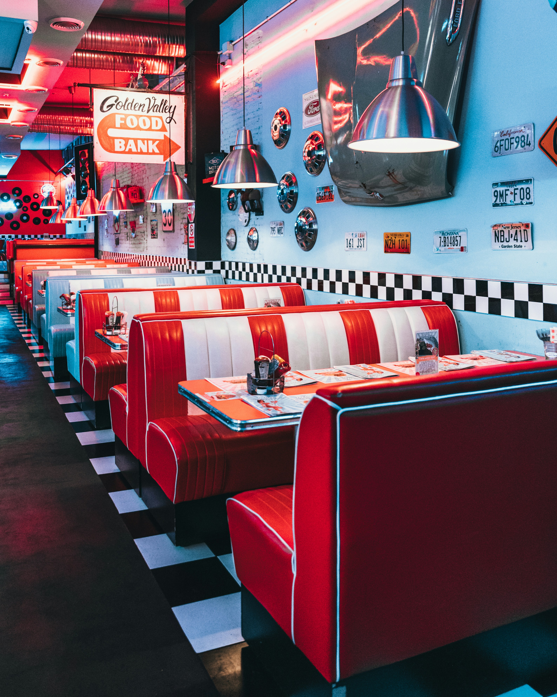

Welcome to American Diner UK



Welcome to American Diner UK, where you can enjoy the authentic taste of American cuisine right here in the heart of the UK. Our diner offers a nostalgic journey back to the golden age of classic American diners, complete with vibrant decor, cozy booths, and a warm, friendly atmosphere. Whether you're craving a hearty breakfast, a satisfying lunch, or a delectable dinner, our menu has something for everyone. Explore our extensive menu filled with classic American dishes such as juicy, mouth-watering burgers made from premium beef, crispy golden fries, and thick, creamy milkshakes in a variety of flavors. Indulge in our signature dishes like BBQ ribs smothered in tangy sauce, fluffy buttermilk pancakes topped with maple syrup, and our famous apple pie with a scoop of vanilla ice cream.

Explore our extensive menu filled with classic American dishes such as juicy, mouth-watering burgers made from premium beef, crispy golden fries, and thick, creamy milkshakes in a variety of flavors. Indulge in our signature dishes like BBQ ribs smothered in tangy sauce, fluffy buttermilk pancakes topped with maple syrup, and our famous apple pie with a scoop of vanilla ice cream. In addition to our traditional favorites, we also offer a range of vegetarian and gluten-free options, ensuring that everyone can enjoy a taste of America. Our commitment to quality ingredients and authentic recipes means that every bite is packed with flavor and satisfaction.
In addition to our traditional favorites, we also offer a range of vegetarian and gluten-free options, ensuring that everyone can enjoy a taste of America. Our commitment to quality ingredients and authentic recipes means that every bite is packed with flavor and satisfaction.